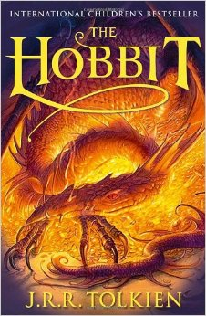
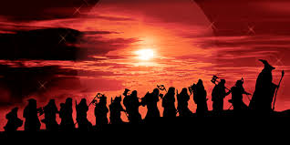

The Hobbit (1937)
" In a hole in the ground there lived a hobbit." - J.R.R. Tolkien, The Hobbit
A brief snyopsis.
Bilbo, a Hobbit (who don't have adventures), is visited by the wizard Gandalf and thirteen dwarves who seek a fourteenth member (to avoid the unlucky number) for their journey to steal the treasure from the dragon Smaug. Though reluctant at first, Bilbo is convinced in part by the trickery of Gandalf to join the unexpected party. He is taken, literally from his comfort zone, off to discover things he knew of only from old tales.
Bilbo's adventure takes him face to face with trolls, goblins, a riddling creature named Gollum, elves and of course the dragon. He learns the value of adventuring and of course returns home the greater for having gone of this journey, bringing back with him, not only treasure but a magic ring of invisibility. The book is written by J.R.R. Tolkien.
The characters
Bilbo Baggins, the titular protagonist, is a respectable, reserved hobbit. During his adventure, Bilbo often refers to the contents of his larder at home and wishes he had more food. Until he finds a magic ring, he is more baggage than help. Gandalf, an itinerant wizard, introduces Bilbo to a company of thirteen dwarves. During the journey the wizard disappears on side errands dimly hinted at, only to appear again at key moments in the story. Thorin Oakenshield, the proud, pompous head of the company of dwarves and heir to the destroyed dwarvish kingdom under the Lonely Mountain, makes many mistakes in his leadership, relying on Gandalf and Bilbo to get him out of trouble, but he proves himself a mighty warrior. Smaug is a dragon who long ago pillaged the dwarvish kingdom of Thorin's grandfather and sleeps upon the vast treasure.
The plot involves a host of other characters of varying importance, such as the twelve other dwarves of the company; two types of elves: both puckish and more serious warrior types; Men; man-eating trolls; boulder-throwing giants; evil cave-dwelling goblins; forest-dwelling giant spiders who can speak; immense and heroic eagles who also speak; evil wolves, or wargs, who are allied with the goblins; Elrond the sage; Gollum, a strange creature inhabiting an underground lake; Beorn, a man who can assume bear form; and Bard the Bowman, a grim but honourable archer of Lake-town.
Publication and sales
George Allen & Unwin Ltd. of London published the first edition of The Hobbit on 21 September 1937 with a print run of 1,500 copies, which sold out by December because of enthusiastic reviews. This first printing was illustrated in black and white by Tolkien, who designed the dust jacket as well. Houghton Mifflin of Boston and New York reset type for an American edition, to be released early in 1938, in which four of the illustrations would be colour plates. Allen & Unwin decided to incorporate the colour illustrations into their second printing, released at the end of 1937. Despite the book's popularity, paper rationing brought on by wartime conditions and not ending until 1949 meant that the Allen & Unwin edition of the book was often unavailable during this period.
Subsequent editions in English were published in 1951, 1966, 1978 and 1995. The novel has been reprinted frequently by many publishers. In addition, The Hobbit has been translated into over forty languages, with more than one published version for some languages.
While reliable figures are difficult to obtain, estimated global sales of The Hobbit run between 35 and 100 million copies since 1937. In the UK The Hobbit has not retreated from the top 5,000 books of Nielsen BookScan since 1995, when the index began, achieving a three-year sales peak rising from 33,084 (2000) to 142,541 (2001), 126,771 (2002) and 61,229 (2003), ranking it at the 3rd position in Nielsens' "Evergreen" book list. The enduring popularity of The Hobbit makes early printings of the book attractive collectors' items. The first printing of the first English-language edition can sell for between 6,000 and 20,000 at auction, although the price for a signed first edition has reached over 60,000.
Influences
There are so many different influences on how the book was written but Tolkien's works incorporate much influence from Norse mythology reflecting his lifelong passion for those stories and his academic career in Germanic philology. The Hobbit is no exception to this; the work shows influences from northern European literature, myths and languages and the strong influence of Norse mythology, especially from the Poetic Edda and the Prose Edda. Examples include the names of some characters, such as Fili, Kili, Oin, Gloin, Bifur, Bofur, Bombur, Dori, Nori, Dwalin, Balin, Dain, Nain, Thorin Oakenshield and Gandalf (deriving from the Old Norse names Fili, Kili, Oin, Gloi, Bivor, Bavorr, Bomburr, Dori, Nori, Dvalinn, Blain, Dain, Nain, borin Eikinskialdi and Gandalfr). But whilst their names are from Old Norse, the characters of the dwarves are more directly taken from fairy tales such as Snow White and Snow-White and Rose-Red as collected by the Brothers Grimm. The latter of these tales may have also influenced the character of Beorn.
Another influence from Old English sources is the appearance of named blades of renown, adorned in runes. It is in the use of his elf-blade that we see Bilbo finally taking his first independent heroic action. By his naming the blade "Sting" we see Bilbo's acceptance of the kinds of cultural and linguistic practices found in Beowulf, signifying his entrance into the ancient world in which he found himself. This progression culminates in Bilbo stealing a cup from the dragon's hoard, rousing him to wrath an incident directly mirroring Beowulf, and an action entirely determined by traditional narrative patterns. As Tolkien wrote, "The episode of the theft arose naturally (and almost inevitably) from the circumstances. It is difficult to think of any other way of conducting the story at this point. I fancy the author of Beowulf would say much the same."